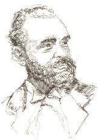

Çek müziğinin en güzel armağanı olan Antonin Dvorak (1841-1904), Bohemya’da doğdu ve Prag Ulusal Orkestrası’nda viyola çaldı. 1874’te Dvorak’ın 3. Senfonisi, ona bayılan bir hayranı olan Johannes Brahms’ın (1833-1897) dikkatini çektiği gibi, kendisine Viyana’da ulusal bir ödül bile kazandırdı. 1891’de Dvorak’a, sadece bir yıl kaldığı Prag Üniversitesi’nde beste profesörlüğü görevi verildi. Sonra New York’ta Ulusal Müzik Konseravtuarı’nın direktörü görevini 15.000 dolar gibi muazzam bir maaşla kabul etti.

Bohemya’da yaptığı beş aylık bir veda turundan sonra, Dvorak Amerika Birleşik Devletleri’ne olan seyahati için yola koyuldu. Orada geçirdiği günler, hayatının en mutsuz, ama en üretken dönemlerinden biri oldu. Keman Konçertosu (1893)’nun yanı sıra 9. Senfonisi olan Yeni Dünya Senfonisi (1893) adlı eserlerini yazdı.
Yeni Dünya Senfonisi, Dvorak’ın Iowa’nın Çekçe konuşan küçük bir kasabası olan Spillville’de yaptığı tatilinde bestelendi. Düzlükler boyunca giden trende, Amerika’nın kendine ait bir yorumunu bestelemek için manzaradan esinlendi. Sonuçta oluşan senfoni, ulusun hem enerjisini hem de uçsuz bucaksız boş alanların hissini sunar. İlerledikçe Dvorak’ın bu esere kattığı Amerikan folk ezgileri ve ritimleri bazı dinleyicilere, bir gezginin kendi anavatanı için duyduğu sıla özlemini hissettirir.
Dvorak’ın orkestra eserlerinin çoğu gibi bu senfonisinde, temel romantik bir hassasiyete sahip olan ama bununla beraber formun klasik bir kavrayışına tutunmuş bir besteci görürüz. Dvorak’ı diğerlerinden ayıran şey, folk melodilerine olan adanmışlığıdır. 5. Senfonisi (1875), Bohemyan tonlarda melodilere sahiptir ve 6. Senfonisi (1880), hızlı tempolu bir Bohemya dansından istifade etmiştir. Kariyerinin sonlarında Dvorak’ın eseri, senfonik şiirin lirik, gevşek formlu türü ile biçimlenir.
EK BİLGİLER:
1. Dvorak, büyüleyici telli kuartetleriyle de meşhurdur.
2. Amerika Birleşik Devletleri’nde geçirdiği neredeyse üç yıldan sonra Dvorak, Prag’a döndü ve operalar ve senfonik şiirler besteleyerek hayatından memnun şekilde yaşadı.
3. Dvorak, “Yeni Dünya Senfonisi”ni yazarken, Henry Wadsworth Longfellow’un şiiri “Hiawatha’nın Şarkısı”nın Çekçe bir çevirisini okudu.